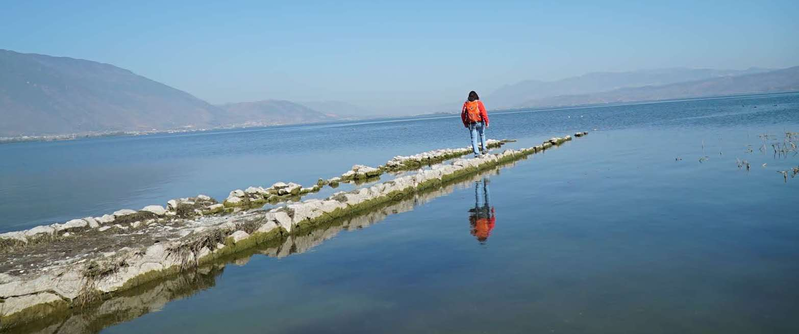

I'm a PhD student at uw plse advised by Alvin Cheung. I create means to realize thoughts.
In my lab, that means to experiment with languages used to program machines. I believe programs can be woven from threads, in addition to being sewn from fragments. Moreover, the act of programming itself can be automated, if we can say what we want clearly.
Before coming to Seattle, I was extremely lucky to work with Professor Kathleen Fisher and Diogenes Nunez at Tufts. They lead me into research and convinced me to keep doing it. Even before that, Professor Norman Ramsey taught me almost everything I knew about programming using How to Design Programs.
After I left the East Coast, my counterpart continues to conduct interdisciplinary studies in a great environment.
You can reach me via email, or find me in the plse lab (cse 407).